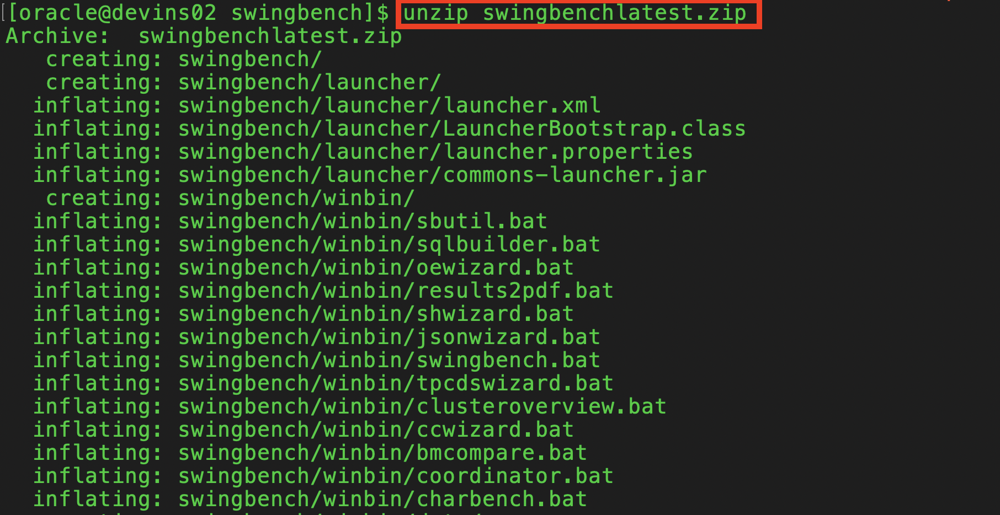

はじめに
Oracle Exadataをベースに構成されるAutonomous Database(ADB)は、分析系の処理だけでなく、バッチ処理、OLTP（オンライン・トランザクション）処理といった様々なワークロードに対応可能です。
この章ではOracle Databaseのベンチマークツールとして利用されることの多いSwingbenchを利用し、OLTP処理をATPで動かしてみます。
併せて、データベースの負荷状況に応じて自動的にCPUをスケールさせる、自動スケーリング（Auto Scaling）の動作を確認します。
目次
所要時間: 約1時間30分
1.Swingbenchをセットアップしよう
Swingbenchをダウンロード、データ生成
まずはSwingbenchを仮想マシン上にダウンロードしましょう、ベンチマーク・データをADBインスタンス内に生成しましょう。
-
Terminalを起動し、仮想マシンにopcユーザでログイン後、oracleユーザに切り替えます。
ssh -i <秘密鍵のパス> opc@<仮想マシンのIPアドレス>sudo su - oracle
-
作業用ディレクトリに移動します。
cd /home/oracle/labs/swingbench
-
Swingbenchをダウンロードします。wgetもしくはcurlコマンドをご利用ください。（数分程度かかります。）
wget http://www.dominicgiles.com/swingbench/swingbenchlatest.zipOR
curl http://www.dominicgiles.com/swingbench/swingbenchlatest.zip -o swingbenchlatest.zip
-
展開します。
unzip swingbenchlatest.zip

-
（必要に応じて）念のため環境変数を設定します。
locate libsqlplus.soexportコマンドで、得られたパスを環境変数LD_LIBRARY_PATHに格納します。
例えば、locate libsqlplus.so の出力結果が /usr/lib/oracle/21/client64/lib/libsqlplus.soだった場合は次のようになります。
export LD_LIBRARY_PATH=/usr/lib/oracle/21/client64/libexport TNS_ADMIN=/home/oracle/labs/walletsもしくは、仮想マシンに再ログインしても上記の環境変数が保持されるように、.bashrcに環境変数を保存します。
vi ~/.bashrcexport LD_LIBRARY_PATH=/usr/lib/oracle/21/client64/lib export TNS_ADMIN=/home/oracle/labs/wallets
-
念のためSQL*Plusでログインできることを確認します。
sqlplus admin/<ADMINユーザのパスワード>@<ADBの接続サービス>
-
データ生成用のスクリプトを編集・実行します。 viで1install.shを開き、内容を確認、お使いの環境に応じて編集ください。
vi 1install.sh【1install.shの内容】
#!/bin/sh ./swingbench/bin/oewizard -cf ~/labs/wallets/Wallet_atp01.zip \ -- クレデンシャルウォレットのZipファイルのパス -cs atp01_tp \ -- ADBの接続サービス -ts DATA \ -- 表領域 -dbap Welcome12345# \ -- ADMINユーザのパスワード -dba admin \ -- ADMINユーザのユーザ名(ADMIN) -u soe \ -- 新規作成するスキーマ名 -p Welcome12345# \ -- 新規作成するスキーマのパスワード -async_off \ -scale 5 \ -hashpart \ -create \ -- スキーマの新規作成 -cl \ -v -
ファイルに実行権限を付与します。
chmod +x 1install.sh
-
スクリプトを実行し、データを生成します。
nohup ./1install.sh &
NOTE
ADBインスタンス内にSOEスキーマが作成され、その中にSwingbenchで利用するオブジェクト、データが作成されます。 データ増幅処理の処理時間短縮化のために、出来ればOCPU数は多めに設定ください。（状況に依存しますが、OCPU=4の場合、2、30分程度。） またデータ生成には多少なり時間を要するため、nohupコマンドを利用します。こうすることで、仮想マシンとのネットワーク通信が万が一切断されたとしても、仮想マシン上で本スクリプトの実行を継続することが可能です。
-
このままでは、実行状況が確認できないため、下記のコマンドで、実行状況の確認します。
tail -f nohup.out
-
以下のようにSchema Createdが表示されたらデータ増幅の処理は完了です。CTRL+C で nohupコマンドを終了してください。
参考までに1install.shが完了するまでの経過時間は、OCPU4において約30分でした

生成されたスキーマ・オブジェクトの確認
次にセットアップしたデータに問題がないか確認します。
-
Terminalを起動し、仮想マシンにopcユーザでログイン後、oracleユーザに切り替えます。
ssh -i <秘密鍵のパス> opc@<仮想マシンのIPアドレス>sudo su - oracle -
作業用ディレクトリに移動します。
cd /home/oracle/labs/swingbench -
viで2-1check.shを開き、内容を確認、必要に応じて編集ください。
vi 2-1check.sh【2-1check.shの内容】
#!/bin/sh ./swingbench/bin/sbutil -soe -cf ~/labs/wallets/Wallet_atp01.zip \ -cs atp01_tp -u soe -p Welcome12345# \ -val ./swingbench/bin/sbutil -soe -cf ~/labs/wallets/Wallet_atp01.zip \ -cs atp01_medium -u soe -p Welcome12345# \ -stats ./swingbench/bin/sbutil -soe -cf ~/labs/wallets/Wallet_atp01.zip \ -cs atp01_medium -u soe -p Welcome12345# \ -tables -
ファイルに実行権限を付与します。
chmod +x 2-1check.sh
-
スクリプトを実行し、実行結果を確認します。（統計情報の再取得も実施しているため数分程度かかります。）
./2-1check.sh以下のように表示されればOKです。

-
ファイルに実行権限を付与し、実行します。負荷がけ用のパラメータを調整していきます。（特にエラー等が出なければOKです。）
chmod +x 2-2pre.sh ./2-2pre.sh
2. Swingbenchを実行し、OCPUをスケールアップしてみよう
それではベンチマークツールを動かしてみましょう。OCPUをオンラインでスケールアップできること、スケールアップの前後でTPS(秒間のトランザクション数)を比較し、TPSが向上することを確認しましょう。
OCPU=1 (自動スケーリング無効)
-
ATPの詳細画面にて、スケール・アップ/ダウンを選択してください。OCPU数を1で自動スケーリングは無効であることを確認して下さい。

-
Terminalを起動し、仮想マシンにopcユーザでログイン後、oracleユーザに切り替えます。
ssh -i <秘密鍵のパス> opc@<仮想マシンのIPアドレス>sudo su - oracle -
作業用ディレクトリに移動します。
cd /home/oracle/labs/swingbench -
viで3execute.shを開き、使用中の環境に合わせて、内容を確認・編集してください。
vi 3execute.sh【3execute.shの内容 】
#!/bin/sh ./swingbench/bin/charbench -c ~/labs/swingbench/swingbench/configs/SOE_Server_Side_V2.xml \ -cf ~/labs/wallets/Wallet_atp01.zip \ -cs atp01_tp -u soe -p Welcome12345# \ -v users,tpm,tps,vresp \ -intermin 0 \ -intermax 0 \ -min 0 \ -max 0 \ -uc 64 \ -di SQ,WQ,WA -
ファイルに実行権限を付与し、実行します。
chmod +x 3execute.sh ./3execute.sh以下のように表示されればOKです。

左から4列目のTPS(秒間のトランザクション数)の数字に着目ください。
安定するまで1分ほど待ちましょう。
-
1分程度待って安定した時点での値を、この後の比較のためにメモしておきましょう。
本環境でOCPU1の自動スケーリング無効の条件では、TPSは約500前後ですね。

OCPU=4 (自動スケーリング無効)
-
ここで、ATPの詳細画面にて、スケール・アップ/ダウンを選択してください。OCPU数に4を入力し、自動スケーリングは無効のまま更新をクリックしてください。

-
Terminalに戻り、TPSを観察しているとOCPU1からOCPU4へOCPUが増えてもオンラインでアプリケーションにはエラーが発生しないこと、OCPUにが増えた結果TPSも向上していることが確認できます

-
1分程度待って安定した時点での値を、比較のためにメモしておきましょう。
本環境でOCPU4の自動スケーリング無効の条件では、TPSは約2200前後ですね。

OCPU=4 (自動スケーリング有効)
-
ここで、ATPの詳細画面にて、スケール・アップ/ダウンを選択してください。OCPU数に4を入力し、自動スケーリングは有効にして更新をクリックしてください。
自動スケーリングを有効にすると、データベースで、CPUの現在のベース数の3倍までいつでも使用できるようになります。

-
Terminalに戻り、TPSを観察していると自動スケーリングが有効になった結果、TPSが向上していることが確認できます

-
1分程度待って安定した時点での値を、比較のためにメモしておきましょう。
本環境でOCPU4では、TPSは約4000前後ですね。

-
Swingbenchを終了するには、Enterキーを押して下さい。

Swingbenchが動いたままOCPUをオンラインでスケールできること、そして、OCPU数や自動スケーリング設定に応じてTPSが向上していることが確認できました。
以上で、この章の作業は終了です。